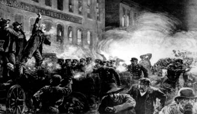

Call for Oct 22, 2005: 10th Annual Day of Protest to Stop Police Brutality, Repression and the Criminalization of a Generation
Submitted on Fri, 09/23/2005 - 7:36pm
In July 2005, an 18-month old baby is killed in her father's arms by Los Angeles police. Police justification of this -- that they were trying to "save" the baby -- reminds people of the famous Vietnam era military quote -- "We had to destroy the village in order to save the village." In Compton, police surround a truck where a man gave them the finger and fire 100 shots. In the last two years since Cau Bich Tran (a young Vietnamese mother of two) was killed while holding a vegetable peeler, there have been about a dozen police-involved killings in the San Jose area alone.
Rudy Cardenas was one of those stolen lives, and state drug agent Walker who shot him in the back is going to trial for manslaughter in September. Amnesty International released a report last November documenting over 70 deaths by tasers since 2001. The Stolen Lives Project has documented an alarming escalation nationwide in the numbers of people killed by law enforcement agents. These killings march hand in hand with the repression, searches and seizures legalized by today's USA PATRIOT Act, which evoke remembrances of the COINTELPRO days of the 1960s and 70s.
Around the country, thousands of Muslim, Arab and South Asian immigrants are arrested, detained, and/or deported without legal recourse. Two New York city officials openly call for racial profiling to be used in the bag searches in the subways, a councilman asserting, "Plain and simply, young Arab fundamentalists are the individuals undertaking these acts of terror" and that they are "[a] particular group of people who are engaging in these terrorist activities. And they're not skinny, balding Italian-Americans from Staten Island."
In Minneapolis, a police consultant, proposing a racial profiling program, brands youth of color as "domestic terrorists." Seattle's ex-police chief goes on a speaking tour to promote his new book in which he lies about police "restraint" in handling the 1999 WTO protests and justifies the use of lethal force against protesters "when necessary." The North Carolina October 22nd Coalition website asks, "Notice how today's police look like a member of an urban military? They use military weapons against you, the civilian."
In New York, Juanita Young (mother of Malcolm Ferguson, killed by NYPD in March 2000) is persecuted by the DA on a bogus charge of criminal trespass for the "crime" of speaking out against police brutality. Her lawyer, Lynne Stewart, another outspoken activist, is subject to 45 years in prison for defending one of her clients' rights to lawyer-client confidentiality. In Mississippi, people's lawyer Chokwe Lumumba is suspended for demanding equal justice for poor Blacks and using his 1st Amendment right to criticize judges and the legal system. On May 2nd, the U.S. and New Jersey State governments raise the bounty on the head of the former Black Panther currently exiled in Cuba, Assata Shakur. Attorney General Gonzales, author of the torture memo justifying Abu Ghraib prison, announces the $1 million reward and lists her as "a domestic terrorist."
Nicholas Heyward, Sr. (father of Nicholas Heyward, Jr., killed by NYC housing police in 1994) says,
"Police brutality has always existed in poor and oppressed neighborhoods. But since September 11, 2001, it has gotten much worse. In order for any justice to be done, it takes a mass number of people coming together for a common cause. Police brutality affects everyone and has to stop. We need as many people as possible to come out this year on October 22nd to support the families of victims of police brutality."
Juanita Young adds that resistance is critical:
"You can't give in. They will try to make an example out of you, try to break your spirit. If you don't resist and keep on fighting, they will be able to get away with what they're trying to do to us."
Norma Martinez (mother of Gonzalo Martinez, killed with 31 shots by LAPD in 2001), writes:
"Since Gonzalo died, more than 25 people have died at the hands of police. Not too long ago, young Devin Brown (13) was killed by LAPD. David Viera was killed by the city of El Monte, shot 11 times. Twenty-two year old Javier Quezada was killed, shot 11 times, right in front of his mother when he was suffering an anxiety attack. No police are in jail. We need justice."
October 22nd is the day when people all over the country come together to STOP police violence, repression, and the criminalization of a generation. Across the country, in different cities and through different means of expression, we raise a resounding "NO" to their steadily increasing moves towards a police state. We resist so that we will not be crushed. Link up to the nationwide protests through the October 22nd website, temporarily located at http://october22-ny.org/national. Email information on your plans to office@october22.org. Endorse this call, give financially, and spread the word. Join the struggle! Fight back! On October 22nd, wear black!
----------------------
The General Defense Committee of the Industrial Workers of the World urges IWWs to participate in the 10th Annual National Day or Protest to Stop Police Brutality, Repression and the Criminalization of a Generation. Already events are being planned in New York, NY, Seattle, WA, Lexington, Kentucky, Los Angeles, Bay Area/ SF, Pittsburgh, Pennsylvania, Laurence and Topeka, Kansas. Since the GDC has endorsed October 22 - tens of Wobblies have said that they have participated in October 22 activities in the past and will do so again this year.
An Injury to One is an Injury to All!
This October is also the 10th anniversary of the murder of Jonny Gammage. On October 12 there will be four simultaneous screenings of new film documentary investigating this case and demanding Justice for Jonny Gammage. For information about "Enough is Enough," and to get your copy in time for October 22, call Celeste at 412-628-7867.
Plan or be part of an October 22 Coalition Protest. Check www.october22-ny.org/national for event listings or to list an event in your area. Send and email about your action and your mailing address to the General Defense Committee of the IWW and receive a copy of our newsletter, the Defiant Spirit.
The General Defense Committee of the IWW,
PO Box 390920 Cambridge, MA 02139E-Mail - gdc@iww.org